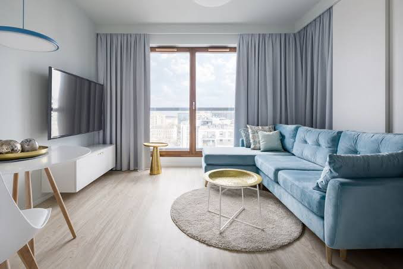

Tren Warna Gorden 2026: Apa yang Sedang Populer?

Setiap tahun, dunia desain interior selalu menghadirkan tren warna baru yang mempengaruhi berbagai elemen dekorasi rumah, termasuk gorden. Memasuki tahun 2026, kita melihat pergeseran dan penegasan beberapa palet warna yang akan mendominasi jendela-jendela rumah modern. Yeny Gorden merangkum tren warna gorden 2026 yang perlu Anda pertimbangkan untuk memperbarui tampilan rumah Anda:
1. Kembali ke Alam dengan Earth Tones:
- Warna-warna alami seperti terracotta, sage green, sandy beige, dan rusty brown diprediksi akan sangat populer di tahun 2026. Warna-warna ini memberikan kesan hangat, nyaman, dan terhubung dengan alam.
2. Kelembutan Warna Pastel yang Diperbarui
Warna pastel di tahun 2026 hadir dengan sentuhan yang lebih halus.
Memilih warna gorden yang tepat dapat mengubah suasana seluruh ruangan. Di Yeny Gorden Purwokerto, kami selalu memperbarui koleksi kami sesuai dengan tren warna terbaru. Kunjungi showroom kami untuk melihat berbagai pilihan warna gorden 2026.